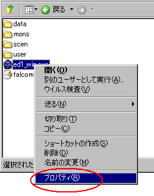
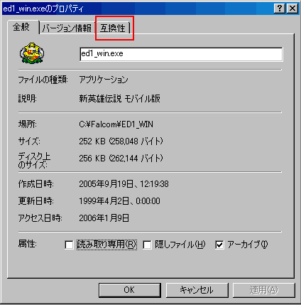
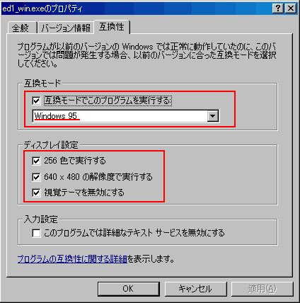

| 概要 | 情報 | アイテム一覧 |
| 敵キャラ一覧 | 攻略チャート | 地図 |
| ダウンロード | 英雄伝説 攻略へ |
|
注意しないといけないらしい Falcomの攻略のヒントを掲載してるページにも書いてありますが、戦闘後に入手 できるアイテムは、最後に倒したモンスターで変化するみたいです。 そのために、よく考えると全ての登場パターンに応じたアイテムが決められてい ることになるので、これは大変なことですね。 |
|
Windows XPで動かす 元々が古いゲームなので、新・英雄伝説の場合は互換モードをWindows95に設定し、 256色で実行、視覚テーマを無視にチェックを入れた方が無難です。

(右クリックでメニューを出し、プロパティーを選択)  (「互換性」のタブを選択)  (表示の通り選択し、チェックを入れる) |
|
ワイロなんて、払いたくない! 第六章でそんなことを思った方は、ワプの翼もしくはワプ2を使い、カウルの村へ 移動して「竜の笛」を入手しましょう。 そして、ドラゴンに乗ってギルモアの里へ行きゲームを進めてください。フィーン の砦へは普通には入れませんが、ワプ2などを使えば簡単に侵入できます。 そもそも、所持金の半分を渡すなんて、もったいないです。 |
| 概要 | 情報 | アイテム一覧 |
| 敵キャラ一覧 | 攻略チャート | 地図 |
| ダウンロード | 英雄伝説 攻略へ |